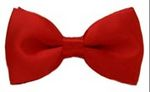
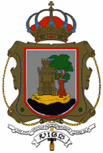
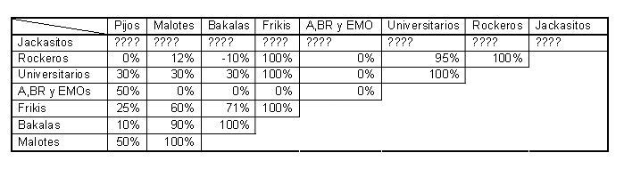
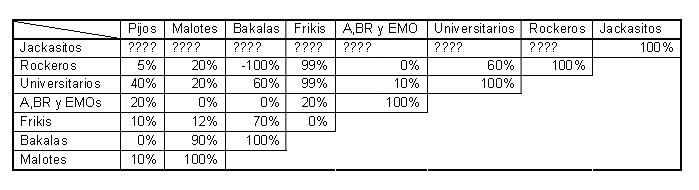

Vigo
 De: La Frikipedia, la enciclopedia extremadamente seria.
De: La Frikipedia, la enciclopedia extremadamente seria.
| De la serie ciudades del mundo:
|
| Vigo
|
| 
|

|
| (Bandera)
|
(Escudo de armas)
|
|
| Topónimo oficial
|
Aldea de Vigo
|
| País
|
Galiza, Portugal
|
| Código postal
|
Nadie escribe cartas a Vigo porque no hay nadie
|
| Superficie
|
Muchas hectáreas de bosque gallego chamuscado y empinadas cuestas, así todos en Vigo tienen las piernas como Roberto Carlos
|
| Altitud
|
1 unidad astronómica
|
| Distancia
|
Aquí todo está cerca de todo
|
| Fundación
|
Caixanova
|
| Población
|
7 aldeanos
|
| Gentilicio
|
Vigorosos
|
| Alcalde
|
Uno/a que antes era bueno/a, pero ahora ya no, independientemente del partido al que pertenezca
|
| Vigo tiene la única ría de la provincia donde no haces pie con la marea baja
|
Para otros usos de este término/definición/cosa, véase Vigo (desambiguación).
Vigo es una aldea sol al año, capital de la provincia del mismo nombre, favorita de los turistas suecos que quieren visitar España. Al estar construida sobre una planicie, se caracteriza por ser la única localidad de España que carece completamente de cuestas de ningún tipo.
Vigo está dominada por diversas mafias y corporaciones, como Barreras, Pescanova o Mar Collóns. Es la localidad más pequeña y fea de Galicia, de ahí que no sea capital de nada. El idioma oficial es el vigués, variante del castrapo y el portugués.
Organización territorial
La aldea de Vigo está dividida en diferentes barrios o parroquias:
- Vigo Centro: Lugar donde viven la mayoría de los aldeanos. Se extiende alrededor del Monte do Castro hasta llegar al mar o a una frontera con Portugal o Turquía. En esta zona se acumulan hermosísimas obras de arte, como la del Sireno de la Puerta del Sol o la mole rosa de la Plaza de América. Las huertas, el ganado porcino y las gallinas son abundantes en esta zona de la aldea viguesa.
- Bouzas: Zona costera llena de toda clase de razas divididas en malotes en la plaza de arena y gente "normal" de la plaza roja. Se rumorea que un día Vegeta intentó atravesar España de una patada OVER 9000 desde América y, al parecer, le dio a Bouzas, y por eso ahora tiene esa playa llena de peces muertos y residuos. La alcaldía, en su afán de protagonismo, predica que es culpa de la contaminación y proyecta la construcción de una depuradora, idea que encanta a los vecinos.
- El Calvario: Zona de rabiosa actualidad por la tremenda repercusión de las manifestaciones de contra las antenas instaladas en el lugar. Estas movilizaciones, según fuentes oficiales, generalmente son de seis personas y media que pasean de arriba abajo por la Doblada. A quien visite esta zona, se le debe advertir de la presencia de gitanos a cierta altura de Gregorio Espino, por lo cual deberían esconder los móviles si no quieren quedarse sin ellos. Este barrio se caracteriza porque el 85% de la juventud que allí habita fuma cannabis habitualmente, reuniéndose... básicamente donde pillen. Esto hace de los vecinos una cantera excepcional para el FBI y la CIA americanas, ya que, al consumir THC desde bebés y al darle todo igual, nunca soltarán prenda en un interrogatorio enemigo, pues son insensibles al dolor y se la suda hasta si matan a su gato.
- Canido: Faltan datos concisos, ya que se entremezclan con los de Coruxo y Saiáns.
- Casco Vello: Esta zona suele ser llamada "Vinos" de noche y "Casco Vello" de día. En este barrio se encuentran las personas y lugares que más caracterizan a la ciudad: los yonkis más reconocidos de Vigo (en total unos 39.274.928.972.094 aprox.), bares tan míticos y conocidos por la juventud viguesa como "El Huevo" o ese antro de viejos que está enfrente donde muchos van a jugar al futbolín con su cubata de garrafón correspondiente. Otro local de la zona es el "Frenopátiko", caro sitio de encuentro caro del caro glamour punk vigués. En cuanto a sus vecinos, aquí pululan algunos de los viejos más emblemáticos de la ciudad, como "el Quijote" o "José Martínez".
- Chapela: Un barrio que, si bien antiguamente pertenecía a Redondela, pasó a formar parte de Vigo en un malvado plan de conquista liderado por Vitrasa. "Sólo os damos un servicio de autobuses, no es por colonizar ni nada" aseguraron. Cuando se dieron cuenta de que habían caído en las garras viguesas, era demasiado tarde.
- Alcampo, lo que le da a todo un aire mucho más siniestro. Hay grandes torres de viviendas que están deshabitadas, ya que los peligrosos habitantes se esconden en los árboles de Castelao para cometer sus atroces crímenes contra los extranjeros. Está completamente poblado por los llamados canis.
- Coruxo: Eufemismo de "la playa" (ver Liñares, tan populares ya, que hasta poseen su propio merchandaisinj, así, como suena. Uno de los slogans de la mítica fiesta parroquial es "Se Masca La Masacre".
- Valadares:
barrio aldea en los aledaños de Vigo, sus habitantes presumen de ser de la ciudad aunque no tienen supermercado ni agua potable. Su población habla idiomas extraños caracterizados por sonidos guturales ya que necesitan comunicarse con burros, población importante ya que existe mucho gitano. Para llegar de Valladares a Vigo hay que coger 4 líneas de buses y un ave, por lo que se tardan 2 horas, aún así para la población friki de este pueblo es poco y están orgullosos de ser de Vigo pese a ser unos leprosos. A la mayoría de sus habitantes le gusta jugar al futbolín en el Bar Copa Dorada
- Beade:
barrio Aldea de la parte alta de Vigo, que limita con Valladares, Sárdoma y Matamá. Sus habitantes son peligrosos montunos y gitanos del monte. Hay que ir con cuidado por sus calles ya que te podrían dar una paliza con un sacho.
- Matamá: Peligroso lugar del monte alto de vigo, es un barrio donde cada día se registran 27 asesinatos con herramientas del campo y 14 apuñalamientos con fouciñas. Las autoridades recomiendan en caso de tener que pasar por su zona ir muy rápido y mirando al suelo.
- Lavadores: Peligrosísimo barrio de Vigo, que incluye zonas tan poco recomendables como Los Pisos. Sólo ahí, cada día se dan 315 asesinatos, 253 violaciones, 3000 palizas y 40 atracos, sin contar el número de transacciones drogosas que se realizan. La gente de Coia tiene miedo de ir hasta allí. Además, el campo del Celta B en Ramón Nieto y un montón de Escuelas Nieto por todas partes que le da a todo un aire mucho más siniestro.
- Saiáns: Colindante con Nigrán, destaca por su alto número de capitalistas. Se distinguen dos bandos: los lugareños y los new-pijos. Los primeros son gente que lleva viviendo allí años luz y que tienen un acento exagerado con alargamiento de la última vocal, sea tónica o no. Los new-pijos, por su parte, son lo que se compran su chalecito junto a la beach y llevan a sus pequeños engendros a la guardería VIP que por la noche se ilumina de tal forma que, junto a la Gran Muralla China, es lo único que puede distinguirse desde el espacio exterior. Su playa más conocida es Muíños de Fortiñón, que fue un anterior punto de encuentro de gente de categoría, como hippies nudistas, pasotas, soñadores-filósofos y amantes de la droga en general. Lamentablemente, desde hace unos años se ha visto anegada por todo tipo de especímenes de lo más profundo de la cuidad: malotes, chowis, semi-yonkis, etc. El principal reclamo turístico es el bareto. Los encargados del establecimiento luchan contra viento y marea con el apoyo de algunos hippies-nudistas que resisten la adversidad e intentan expulsar a los especímenes, pero el olor a canuto los atrae irremediablemente.
- Teis: Zona de Vigo famosa por tener un monte alto, cosa tremendamente extraña en la ciudad. Entre sus habitantes se hallan los travesianos, individuos que habitan en los suburbios de Vigo y consumen extrañas mezclas alcohólicas. Teis es una zona caracterizada por sus modernos edificios y porque allí todos son multimillonarios, de ahí que se permitieran instalar un gran botella de una dulce fragancia llamada Lapaca D'Ora.
- Torrecedeira: Lugar situado en el interior do Casco Vello, donde los estudiantes del politécnico se va a fumar. Como símbolo de interculturalidad e integración, Vigo cuenta con el parque de Cela en esta zona, lugar en el que confluyen rumanos, canis, malotes, gente normal (la que menos) y mezclas entre los diferentes tipos: canis rumanos, malotes normales... Y donde se suele quedar para actos no apropiados.
- Zamáns: Zona de monte famosa por tener árboles, árboles, árboles y árboles. También se encuentra allí el infinito embalse de agua ilimitada, donde, llueva o no llueva, la capacidad siempre está al 100%.
Equipucho de fútbol
Su equipo o banda de amigos local de Champiñon Ligue por 12 ocasiones consecutivas y de varias Copas del Rey gracias a su goleador Alejo. Está considerado como el mejor equipo del mundo, seguido de cerca por el Alpedrete B. Lleva una gran amistad con el Deportivo de A Coruña y normalmente, cuando coinciden los dos equipos en un partido, montan una orgía en el área del equipo visitante para mostrarse su amor y se olvidan de la pelota, quedando en empate.
Población y Sociología de Vicus Augusti
Los habitantes de Vigo son ligeramente diferentes al resto de la humanidad. El primer rasgo a destacar de los vigueses es su ruralidad, propia de la aldea más recóndita de la Galicia interior, algo normal dado el pueblucho rodeado de huertas y gallinas que es. Al igual que los Tamagotchis o Los Sims, los vigueses cambian de golpe cada cierto tiempo, y según como hayan vivido en su anterior etapa evolucionan a una u otra forma. El ciclo vital de los vigueses está formado por 3 etapas básicas: Niño, Joven y Adulto. Se rumorea que también existe la de anciano y la de muerto, pero aún no ha sido confirmado.
Niños vigueses
Los niños vigueses son todos iguales: muy de aldea. Sus pasos en esta etapa marcarán en lo que evolucionarán cuando pasen a la siguiente etapa. La juventud. Comienzan a masturbarse en torno a los diez años, empezando a correrse a los doce y perfeccionando su técnica hasta los cuarentaymuchos (cuando ya no son (tan) niños).
Juventud viguesa
Los niños vigueses pueden evolucionar a 6 formas básicas de joven, aunque pueden tener los rasgos de dos de ellas a la vez; pero existen ciertas incompatibilidades. La condición rústica es algo común a todos los jóvenes vigueses. Estos se agrupan esencialmente en:
- Pijos: O sea, eso, pues pijos, de esos que, vamos, te lo juro, son pijos y todo eso ¿sabes?
- Malotes: Seres que son capaces de entablar una batalla por "un euro", pero la mayoría de ellos no tienen más fuerza que cualquier hombre que vaya al 7-4.
- Canis: Seres que principalmente sirven para dar asco, no cumplen ninguna función importante. Tienen una forma de hablar cani (como bien indica su nombre) y aunque todavía no sabemos el significado de ciertas palabras, pronto dominarán el mundo.
- Bakalas: Los bakalas de Vigo son un grupo muy diluido, y apenas queda ninguno puro, la mayoría suelen ser más de algún otro tipo de joven. Sin embargo, todavía queda algún bakala que haría pasar al Neng por persona normal.
- Planchas: Los planchas son seres de origen rioplatense (Argentina-Uruguay), de la misma raza que los canis pero con una personalidad más peligrosa. La diferencia es que estos pasaron hambre y los canis no, entonces pueden llegar a matar para lograr sus objetivos. Se prevé que en el año 2020 Vigo esté poblado de planchas, ya que actualmente los canis dominan todo su territorio (les apoya el PP, porque tienen cadenas de oro) hasta que se rebelen.
- Frikis: Los típicos y normales frikis que te puedes encontrar en cualquier lado...
- Modernos: Son los antiguos emos. Ahora han digievolucionado y tienen septums, dilataciones y el pelo de colores.
- Universitarios: Los ciudadanos del montus universitario del CUVI.
- Rockeros: En esta categoría se incluyen los heavys, los metaleros, los punks... Y un sinfín de personas de mal vivir, incluyendo al señor que dirige los camiones en la Plaza de España.
- Jackásitos: Especie que todavía se está dando a conocer.
- Skaters: Hace unos años estaban absorbidos casi en su totalidad por los malotes y hasta hace un tiempo no quedaba rastro de ellos. Se temía su extinción, pero han resurgido.
- Traceurs: (también conocidos como parkuleiros) Aparecen de la nada, se distribuyen en grupos, y lo único que saben hacer es dar saltitos por la calle y grabarse para colgarlo en el DailyMotion.
Lugares de encuentro
- El Portu: kiosco mejor preparado sanitariamente según la revisión realizada en 1800 mas o menos, lo mejor es su espacio ya que pueden entrar mas de 0,0000000001 personas contando con el que despacha, que es un señor que parece que se comió una bombilla de pequeño y le creció al mismo ritmo que su cabeza, su mejor clientela son los chavales de los colegios d'alrrededores en su historial presume de 3000 denuncias de sanidad, 5 denuncias por vender tabaco a menores, 100 denuncias por agresiones múltiples (esa puesta por el que despacha), 9999999 robos en su interior y 1 prueba de sanidad pasada con éxito.
- Lugares de encuentro de los pijos: Nadador, es decir, aire libre y un pedo que te cagas entre los participantes. Luego están garitos de música hortera como Remache (también frecuentado por neo-adolescentes mononeuronicas y veinteañeros salidos), que abre y cierra (como el cosmos de Heráclito) según la cantidad de protestas de los vecinos. Por las tardes sus lugares de encuentro son las huertas y los gallineros que hay en el centro de Vigo.
- Lugares de encuentro de malotes: Nadador también, pero a diferencia de los pijos, estos se reúnen en rebaños, buscando "un euro" entre la juventud y entablando duras batallas a muerte por el adorado metal.Por las tardes se reúnen en "su barrio" (realmente no suelen ser de ese barrio sino que van es sus "burras" (motos de 50cc que ni tapas tienen y siempre tienen yasuni) para saber sus zonas solo tienes que ver sus nick donde pongan "detras manda" "la trave city" "los de genaro" "coia 4é" o similares.
- Lugares de encuentro de los canis: Puntos de encuentro similares a los de los malotes.
- Lugares de encuentro de bakalas: Suelen encontrarse en discotecas intraurbanas, pero también se desplazan hacia sitios como el lejano continente de Bouzas o a pueblos desconocidos por todos en que sólo está la discoteca en cuestión (ejemplo: Queen, pronunciado por algunos como ('ken) - sí, como el muñeco de la Barbie - en un tal Sanguiñeda, Mos)
- Lugares de encuentro de frikis: Muy, muy dispersos; pero también muy variados. Los más destacados son Norma Comics (que últimamente sufre una invasión de pijos frente a la cual los frikis no parecen actuar, aunque se dice que traman un plan secreto para acabar con esa subraza pija de una vez por todas), dónde encuentran los materiales para sus juegos de rol del tipo guarjamer condemor, vampiro: la masacrada... también esta Centro Mail (más conocido en ocasiones como Centro e-Milio), el pequeño santuario de los denominados gamers. Despues estarían las asociaciones vecinales todas ellas puntos de reunión indiscutibles para las partidas de rol interminables. Además hay un pequeño bastión, la Asociación de Rol (hay una por ejemplo en Heraclio Botana), pero la diáspora friki es realmente notable. Luego se puede apreciar un lugar de paso casi obligatorio de los frikis, en el bar de catro a catro, el cual ha sido frecuentado al menos unas cuantas veces por casi todos los frikis de la ciudad. El punto culmine de cualquier friki vigués verdadero es la expo nipon, que se realiza en la Asociación de vecinos de Balaídos donde existe campeonatos de juegos, peliculas expuestas, taller de dibujos, y donde puedes encontrar al tio que menos friki te pareciese que resulta que sabe sobre Hentai. Por motivos desconocidos, en muchas ocasiones se congregan con los rockeros.
- Lugares de alternatas: En Churruca y alrededores, o el Marexada.
- Lugares de encuentro de los modernos: La ESO y en Bachillerato del I.E.S Politécnico. Con frecuencia, se dejan ver por los recreos y en la salida bebiendo Monster. Últimamente se han dejado ver por el Marexada.
- Lugares de universitarios: Los universitarios encuentran su lugar en el CUVI, y algunos de ellos se alojan en la mítica y legendaria Residencia La Florida.
- Lugares de rockeros: Se congregan por la zona de vinos y locales donde se hacen conciertos de grupos penosos a lo que se va a hacer "pogo". Últimamente se están mezclando con los skaters, y se mueven por el nadador. En muchas ocasiones se congregan con frikis. ¿Por qué? pues la verdad, ni puñetera idea
- Jackasitos: se reúnen en locales 24h y van por todo Vigo montándola y dándose a conocer por donde quiera que pasen.
- Lugares de los Parkuínters: Cualquier esquina en medio de la calle en la que poder saltar, imprescindible un sitio en el que apoyar su cámara de vídeo y/o móvil.
Afinidad entre jóvenes
En la siguiente gráfica podemos ver como se llevaban las distintas especies de joven según un estudio de Noviembre del año 2007:

La afinidad entre pijos y malotes; especies que en principio deberían ser incompatibles, es que en muchos casos las pijas utilizan a los malotes, dado el estado de salidismo de estos, para satisfacer sus deseos.
Posibilidad de combinación
Y en la siguiente, las posibilidades de combinación (de ser varias cosas a la vez), según un estudio de Noviembre del año 2007:

Nótese la baja compatibilidad entre Pijo y Friki. Y es que aunque algunos pijos se hagan pasar por frikis, no son frikis. Son pijos. De todos modos, como muestra la gráfica, Friki es compatible con todo en mayor o menor medida, salvo con friki. La combinación de friki con friki es extremadamente inestable.
Adultos vigueses
En esta etapa las cosas se vuelven a simplificar a 3 sencillas evoluciones posibles y completamente incompatibles entre sí. Aunque sin embargo, a simple vista es casi imposible saber a qué tipo corresponde cada uno. Puede recordar a lo de Fachas y Rojos en el resto de España; pero no tiene nada que ver.
- Adultos con yate (Capitalistas): A esta categoría se puede evolucionar desde cualquiera; pero principalmente los pijos tienen más posibilidades.
- Adultos sin yate (Progresistas): A esta categoría se puede evolucionar desde cualquiera, pero los universitarios (inclusive los pijos) tienen muchas más posibilidades.
- Adultos sin casa (Andrajosos): A esta categoría se atribuyen los desgraciados afectados por la crisis de la Eurozona 2008-2050?. Se quedaron sin trabajo y sin paga social, así que no les queda más remedio que robar o pedir.
No deja de ser curioso esto; teniendo en cuenta que en la etapa de juventud los pijos suelen llevar motivos comunistas en sus ropas más caras por haber sido compradas ya rotas.
Construcciones características
- Huertas: las típicas huertas gallegas abundan por todo Vigo.
- Gran Vía: camino de cabras rodeado de huertas. El nombre es una ironía que comenzó como una broma pero al final quedó.
- Callejón de Urzáiz: camino de cabras aún más pequeño que el anterior.
- Charruca: la zona con más marcha de Vigo. Consta de dos tascas.
- Caballos escapando de rotonda: Unos caballos que se montan unos encima de otros en busca de una salida para salir vivos de la rotonda de la Plaza de España.
- Gallineros: construcción más típica de Vigo.
- Balaidos: Estadio del celtibero, con unos característicos hierros de color rojo que salen hacia la calle dando la sensación de sujetar el estadio. Se cree que son los tentáculos de Caixanova que quiere llevarse el celtibero por delante.
- Centro comercial Gran Vía: centro comercial cercano al camino de cabras.
- Callejones: son el modelo de calle más abundante en Vigo. Suelen estar llenas de excrementos de vaca, paja y cabras.
- Citroen Picasso: Un plan de la burguesía para enfrentarse a Vitrasa.
- Puente de Rande: Puente colgante, que se cree que es el único acceso hacía Santiago y A Coruña.
- El Sireno: Estatua que representa a un hombre acuático, está hecha de los aviones atrapados en Peinador.
Sevicios
Medios de Transporte
Estos son los principales medios para transportarse por Vigo:
- Vitrasa: Una importante mafia que controla el tráfico rodado de la ciudad por medio de sus enormes autobuses verdes. Si te metes con Vitrasa, a los pocos días tu coche sufrirá un desgraciado accidente. Contigo dentro. Si tienes suerte y te montas en uno de ellos parecerá que también has montado en una montaña rusa con la velocidad a la que van.
- Mar Collóns: Una importante mafia que controla el tráfico náutico de la Ría de Vigo por medio de sus enormes barcos blancos. Se asoció con Vitrasa en el año 2003 y desde entonces su maldad no ha hecho más que subir. Tienen un nivel tal de maldad que logran llegar al terrible pueblo de Cangas sin que ningún terrible cangués se atreva a tocarlos.
- Los taxistas: Increíbles seres que consiguen sobrevivir a los Vitrasa. Cada vez que hay una parada de Vitrasa llena de gente esperando; sobre todo si llueve, los taxis disminuyen su velocidad ante las personas que allí esperan, como una puta paseándose ante un grupo de salidos, con la esperanza de conseguir clientes. Sufren una increíble transformación de la noche al día; durante el día suelen llevar de visita turística incluso a los propios vigueses, pararse en los semáforos en ámbar y respetar todas las señales con amor. Por la noche, sin embargo, giran sobre la doble linea continua si tienen que girar; incluso con una rotonda a 20 metros; se saltan los semáforos en rojo, y alcanzan velocidades que harían vomitar a Fernando Alonso. Como a esas horas los únicos Vitrasas que hay son los 2 nocturnos; los taxistas pueden demostrar su verdadera identidad; y durante las noches; son estos incribles seres los que controlan el tráfico de la ciudad. Si te metes con un taxista por la noche; a las pocas noches tu coche sufrirá un desgraciado accidente. Contigo dentro.
- Peinador: Enorme trampa para aviones con la cual la ciudad de Vigo captura aviones, los funde, y utiliza su metal para fabricar semáforos.
- Estación de Vilagarcía y Pontevedra desde Vigo. También son esos destinos los únicos destinos seguros con Renfe. Cualquier otro destino puede suponer la muerte.
- MonBus: Entidad destinada a comunicar a los vigueses con el exterior. En realidad no es más que una mafia que se dedica a echar a la gente de Vigo dejándola en otras ciudades gallegas, sobre todo en Tui. Es uno de los núcleos del dinero negro vigués.
- ATSA: Otra empresa/mafia de autobuses. Es el máximo enemigo de Vitrasa. Te llevan hasta Baiona, pero a lo mejor te secuestran dentro del bus
Medios de Comunicación
- TeleVigo: Canal de televisión local de Vigo en el que se puede ver una rica programación que consiste en porno, noticias locales e internacionales, porno, un programa de cine, porno, una sección de contactos a través de SMS, porno, otra sección de contactos a través de SMS y porno a pantalla partida con contactos a través de SMS en la otra mitad de la pantalla.
- Faro de Vigo: Periódico local de Vigo en el que se puede leer una rica variedad de textos que consisten en porno, noticias locales e internacionales, porno, una sección de cine, porno, una sección de contactos a través de cartas o SMS...
- RadioVigo: Cadena de radio local de Vigo en el que se puede escuchar una rica programación que consiste en Cadena SER tiene en la ciudad. Bueno vale, entonces sí. Consiste en porno, noticias locales e internacionales, porno, un programa de cine, porno, un programa de deporte al que se puden enviar SMS, porno, otro programa de deporte al que se pueden enviar SMS, porno y un programa nocturno llamado hablar por hablar al que se puede llamar por teléfono para contar que "Quien le comía el chocho era un pastor alemán".
- Rock Vigo: Foro de heavys, progresivos, metaleros, punkys y Pocho. Es conocido por sus planes organizados para la destruccion y desintegracion de grupos tales como Calambur 4, Awen, Saganus, y Gangrena. El foro es regido por el supremo DGS, con sus fieles asesinos a sueldo El Alcalde, Krezal y Brea. Su base principal la tienen en Teis donde si dices que eres del foro te hacen un 10% de descuento en los Danonido, Yogurets Larsa, Yogurets Yoplait, Mirindas, Kas Naranja, Kas Limon, Pepsi y productos de limpieza tales como Don Limpio y Ajax.
Flora y Fauna
La flora y fauna viguesas son casi únicas en el mundo, incluyen especios exóticas y muy peligrosas; la biodiversidad de la ciudad es muy variada, estas son las principales especies:
Flora
- Camelias (Vicus Camellia): árbol de tamaño medio que da unas bonitas flores rojas, se encuentran principalmente en la calle Camelias. Estas camelias son milenarias y ya nacieron en hilera, la calle se construyó a su alrededor.
- Árbol de Adorno (Adornis Arbolis): árbol de tamaño medio traído por un cura de Tui, se utiliza para adornar las calles de Vigo, aunque son feos como matar a un padre y estorban a los transeúntes, por los que muchos deciden arrancarlos y comérselos.
- Palmeras (Palmeris Falo): palmeras surgidas de los cocos que trajo Cristóbal Colón de América. Colón, pensando que eran testículos de negro los sembró con el fin de obtener negritos y usarlos como esclavos, su decepción fue mayúscula.
- El Olivo (Olea Vicus Unicus): símbolo de la ciudad, es el Olivo primigenio del que proceden todos los olivos de la tierra, tiene millones de años y nació por un deseo de Manuel Fraga a las bolas de dragón, sus raíces se extienden por toda la ciudad y son las culpables de todos los baches.
- Flores corina (Corinis Tirapelas): flores compradas por Corina Porro para decorar la ciudad, tienen que ser repuestas todas las semanas, ya que una extraña secta las arranca y se las planta a perros en el lomo creando un Bulbasaur.
Fauna

Una de las pequeñas ratas de Vigo, lista para se llevada a un restaurante chino para hacer
Rata Pollo con Almendras
- Rata (Chihuaguus Sucius): Digan lo que digan en el Ayuntamiento, en Vigo hay más ratas que vigueses. Se están organizando y pronto tomarán el control del Paseo del Príncipe y una vez tengan un suministro ilimitado de gofres, conquistarán todo Vigo, luego toda Galicia, y finalmente el mundo.
- cachopanes arrojados por las ventanas por viejas jubiladas que no tiene nada mejor que hacer que joder a la gente atrayendo a las dichosas ratas de mar.
- Palomas (Rata Volantis): Las también llamadas ratas voladoras cuentan por decenas de cientos de miles de millones de billones en Vigo, hay cien en cada esquina. Viven bajo el yugo de las gaviotas. Se las puede distinguir por los muñones de sus patas o falta de garras, que son arrancadas por las gaviotas como muestra de poderío.
- Gorrión (Piju Caniju): Más conocidos en Vigo como pardales, rellenan el hueco entre gaviotas y palomas como el azúcar rellenaría el hueco en un tarro lleno de garbanzos y arroz. Se comen migas y envoltorios de caramelo que se encuentran por ahí, y se dedican a colocarse uno en cada esquina y piar cada vez que pase alguien.
- Wookies (Wookies): Descendientes de Chewbacca, viven en la más alto de la copa del Olivo, de noche se les puede ver cazando gaviotas y palomas con palillos chinos.
- Pulpos Prestige (Octopussy Prestige): Pulpos mutados por el chapapote del Prestige, ahora pueden caminar por la tierra y miden entre 2 y 4 metros, su dieta fundamental son malotes que cazan en el nadador por la noche.
- Perros (Caninus Rarus): Son extraños perros que pueden comer cualquier cosa, desde helados hasta teletubbies (y de un solo bocado). Normalmente tienen el aspecto de perros con algunas diferencias como el color de pelo o el peso (solo en algunos ejemplares, otros son iguales a los perros). Tienen ese aspecto por haber quedado expuest@s a la radiación de las antenas de el Calvario. Normalmente se encuentran viviendo con personas pero en algunos casos se marchan a donde les da la gana. Hay rumores de que los que permanecen en libertad están aliados con los wombats para derrotar al Luisma.
- Canarios (Pajarus Tocapelotis): Canarios que han sufrido mutaciones por estar expuestos a la radiación desprendida de los Pulpos Prestige que han consumido gofres con ADN de wombat. Son extrañamente verdes (al contrario de las especies fuera de Vigo) y tienen poderes sobrenaturales como piar todo el día sin cansarse ni parar para coger aire, y también atacar a todo el que le de la gana produciendo quemaduras de primer grado (atacan con la técnica de tirarse un pedo con un mechero delante) y por último provocan maremotos cuando se bañan (aunque se bañen en bañeras pequeñitas provocan un maremoto en la playa). Al igual que los perros la mayoría de especies se encuentran viviendo entre las personas (pero en este caso camuflado y espiándoles para conseguir un plan perfecto para dominar nuestras mentes) y algunos en libertad. Los especímenes de estos canarios en libertad están aliados (al igual que los perros) con los wombat pero no se sabe para qué.
Hoteles
- Residencia La Florida
- Castro de Vigo: serie de palacetes encuadrados en las laderas del monte castro de Vigo, con todos los servicio propios de la época: techo de paja, ventanas sin cierre, paredes circulares para aprovechar el espacio al máximo y vajilla campaniforme.
Ciudadanos Ilustres
- Maestro Mutenroshi :Hombre que habita en el Marexada y del cual no se sabe nada, se cree que vino desde su lejana Isla para llegar a la Hora Feliz, y se quedó. Se cuenta que un día habló, pero nadie puede asegurarlo.
- Putas del Berbés :Se cree que estaban en Vigo cuando Vigo se creó y que entonces había alguna guapa, hoy en día guapas no queda ninguna, pero las putas son las mismas. Una vez una persona aseguró que vio una que no era negra.
- Sinforoso Ambrosio :Hombre que se deja ver en las oscuras y alcohólicas noches de Vigo en la zona del Náutico para hacer reír a la gentuza que allí se encuentra, por el día no es tan sencillo verlo, porque se hace llamar Abel Caballero.
- Hombre disfrazado de Mickey Mouse en el centro :Se cree que lleva en Vigo incluso desde antes que las propias putas, entre el C&A y los gofres se encuentra este fantasmagórico hombre que vende globos a los niños a cambio de sabe Dios qué. Solo los vitraseros pueden mirarle directamente a los ojos.
- Hombre que toca el violín :Este simpático hombre, conocido por todos, es la forma deshidratada de un mafioso de Coia, con un repertorio inmensamente alto de canciones, con un número exacto de 2,5 canciones, ameniza las noches en la zona de Rosalía de Castro.
- Los yonkis de las burbujas :Enclavados en la Puerta del Sol se dedican a amenizar la tarde a los transeúntes haciendo pompas de jabón. Antiguamente rivalizaban con la yonki anónima, cuya función era pedir en lo que esperaba su metadona y despotricar contra quienes no le daban suficiente.
Autor(es):
- Krusher
- Nexo
- CartDestr
- Mithran
- BloodyFountain
- Zarovich
- Ultrapuerco
- Erbiejo
- AGF
- Frikiman
Frikipedia 2005-2016, Licencia
GFDL 1.2 - Extraído por FrikiLeaks